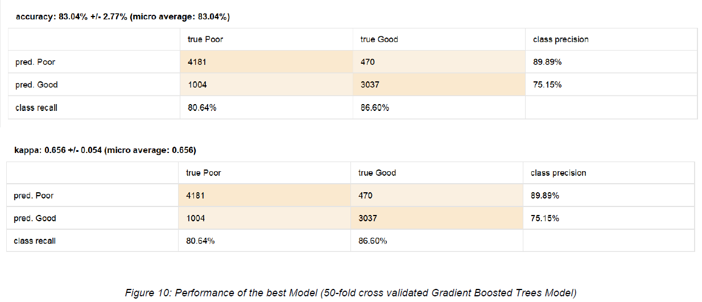
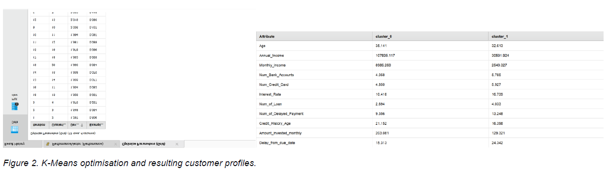
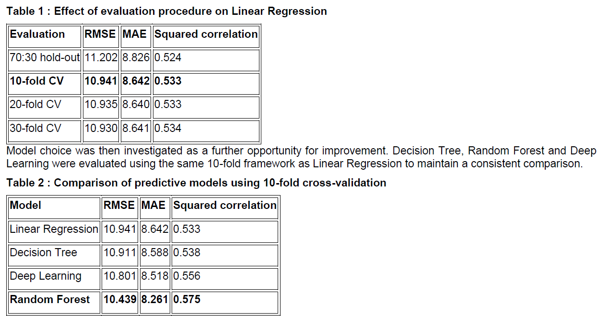

Credit Risk Analytics & Machine Learning
Project Overview
An end-to-end predictive analytics project developed using Altair AI Studio (RapidMiner) as part of the MIS772 Predictive Analytics coursework at Deakin University.
The project explores customer financial behaviour through credit risk classification, customer segmentation, payment-delay prediction and loan association mining. Multiple machine learning algorithms were evaluated to identify suitable approaches for each analytical objective.
01. Credit Risk Classification
Developed a classification workflow to identify customers with Poor or Good credit scores using financial and repayment characteristics.
Preprocessing included invalid-value detection, missing-value treatment, attribute transformation and predictor selection.
Evaluated k-NN, Decision Tree, Random Forest, Naive Bayes, Gradient Boosted Trees, Decision Stump and Deep Learning. Voting ensembles and cross-validation were also investigated.

Selected Model Performance
| Model | Accuracy | Poor Recall |
|---|---|---|
| Decision Tree | 80.71% | 74.68% |
| Random Forest | 80.25% | 73.65% |
| Deep Learning | 81.86% | 80.21% |
| Gradient Boosted Trees (50-fold CV) | 83.04% | 80.64% |
The final selected Gradient Boosted Trees model achieved 83.04% cross-validated accuracy and 80.64% recall for the Poor credit score class. Identifying higher-risk customers was prioritised during model evaluation.
Download Classification Workflow →02. Customer Segmentation
Applied K-Means clustering to identify groups of customers with similar financial characteristics. Numerical attributes were range-normalised before clustering.
Cluster counts from 2 to 20 were evaluated using the Davies-Bouldin index and within-cluster sum of squares. The selected two-cluster solution achieved a Davies-Bouldin index of approximately 1.30.
The analysis identified two customer segments: one with comparatively stronger financial characteristics and another with greater credit and repayment pressure.

03. Payment Delay Prediction
Developed regression models to estimate the number of days customers delay payments based on their financial characteristics.
Compared Linear Regression, Decision Tree, Deep Learning and Random Forest using 10-fold cross-validation.
Model Comparison
| Model | RMSE (days) | MAE (days) |
|---|---|---|
| Linear Regression | 10.941 | 8.642 |
| Decision Tree | 10.911 | 8.588 |
| Deep Learning | 10.801 | 8.518 |
| Random Forest | 10.439 | 8.261 |
Random Forest achieved the lowest prediction error among the evaluated models. The predictions could support earlier customer engagement, although the error levels mean they should not be treated as exact payment dates.

04. Loan Association Mining
Applied FP-Growth and association-rule mining to explore which loan products customers commonly held together.
Loan types were converted into binary indicators before mining frequent itemsets. Association rules were evaluated using support, confidence and lift.
Credit-Builder and Home-Equity loans appeared together in approximately 14.7% of analysed records. However, their lift of approximately 1.067 indicated a relatively weak association, limiting the strength of potential cross-selling conclusions.
Download Association Mining Workflow →Tools & Skills
Altair AI Studio (RapidMiner) · Machine Learning · Classification · Regression · Clustering · Ensemble Learning · Deep Learning · Cross-Validation · Data Preprocessing · Association Rule Mining · Model Evaluation
Key Takeaway
This project demonstrates the complete predictive analytics workflow, from preparing financial data and experimenting with multiple algorithms to evaluating model performance and translating results into business insights.
The downloadable RapidMiner processes are provided for technical review. Reproducing them may require reconnecting the original datasets.